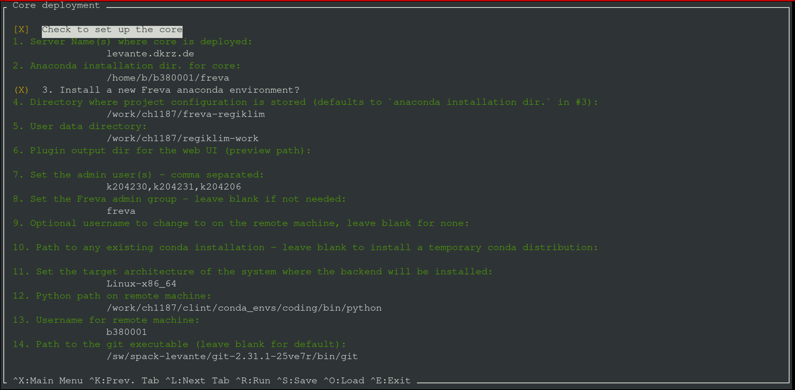
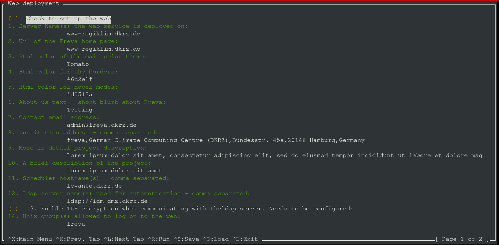
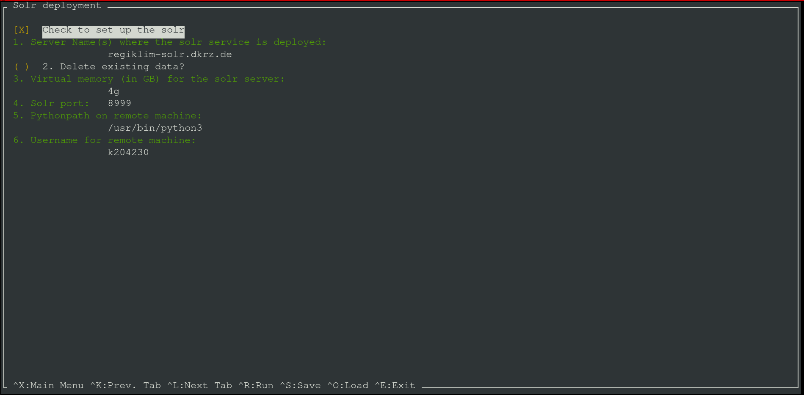
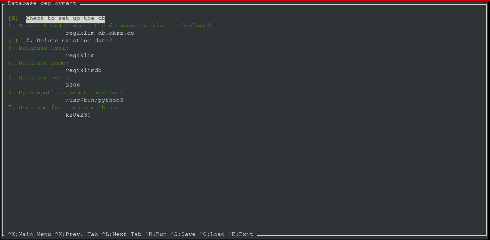
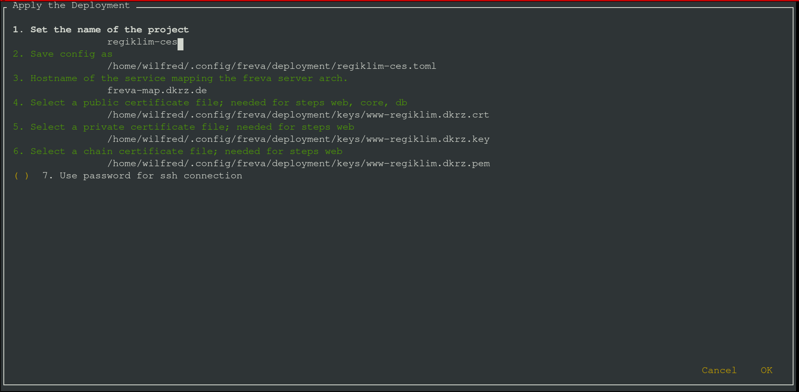

Usage of the text user interface#
We have created a simple text user interface (tui) that helps you setting up a Freva instance at your institution. At this stage the documentation assumes that you have familiarised yourself with the necessary server infrastructure and pre-requisites. Please refer to the installation and configuration section for more details.
After Installation the command deploy-freva will open
the tui. The tui is organised in five different screens. The first four screens
are used to configure the services (core, database, freva-rest, web) the last screen
(run screen) configures variables that are common amongst all services.
The code of the tui is written using the npyscreen
library.
General usage#
After opening the tui with the deploy-freva command you’ll see a small
navigation panel on the bottom. Navigation is done by shortcuts and similar
to those used in the nano text editor. All shortcuts start with
a ^ which indicates CTRL+, main shortcuts are:
CTRL+f: Further information on each configuration item.CTRL+x: Enter main menu.CRTL+v: Edit/Add environment variables.CTRL+o: Load a saved configuration.CTRL+s: Save a configuration to a.toml.CTRL+k: Go to previous setup screen.CTRL+l: Go to next setup screen.CTRL+r: Got to the run screen.CTRL+d: Clear the application cache.CTRL+e: Exit application.
Tip
The load/save forms can be exited by pressing the <TAB> key
which will get you to input field at the bottom of the screen. If the input
field has text delete it an press the <ESC> key, this will bring you get to
the screen where you started.
Some variables need to be set for the deployment setup while others don’t and can be configured later.
Core setup#
The first screen configures the setup of Freva client library at the HPC system.
We refer to this step as the core deployment. At the top of the
screen you’ll see a tick box, which indicates whether or not this step is
used for deployment. If this box is unticked - tick/untick using the <SPACE>
key - the deployment will skip the core installation on the HPC system.
The following explains the essential setup steps:

The host name(s) where the core installation is executed. You can use all multi host patterns that ansible supports.
The installation directory of the conda-forge environment where the
frevapython library shall be installed installed.Set the directory where project specific configuration is stored. See also the
root_dirdescription in the Basic configuration section.Set the user plugin output directory. If you want to use a local output directory structure you can leave this variable blank. See also the Basic configuration section.
Set the preview path mentioned in the Basic configuration section.
Set the workload manager system from the dropdown menu.
Set the output directory of the
stdout/stderrof the workload manger.💡the workload manager type, like pbs, will be automatically appended to this directory.Set the user names (comma separated) of the Freva admins of this project.
If you have a special user group for Freva admins you can set this this key here. This will cause the creation of folders with permissions suitable for multi-user write access (2775) on the target machine. This assures that multiple admins can adjust the Freva configuration. You can leave this variable blank.
If you need to change to a common user (for example via
sudo -i) that is able to install Freva on the HPC system you can set this common user name here. Note that this method should only be used if freva needs to be set up with a shared user account and you cannot log on to the HPC system with this shared user name. Most of the time it should not be necessary to use this option, either because you don’t need a shared user account, or you can instruct ansible to directly log on as the shared user.If you have an anaconda binary already installed on the target system you can set the path to the
condaormambaexecutable here. Leaving this variable blank (default) will cause the deployment to temporary download and create an anaconda install script - which will get deleted afterwards.Select a pre-defined target architecture for the anaconda environment.
💡The Freva installation has only been tested for MacOSX-x86_64, Linux-x86_64 (including Windows wsl2) and Linux-aarch64 (arm).If you want to customise the installation process you can set the path to a custom ansible playbook here. If this is set then the deployment will use this playbook instead of the default playbook that ships with the system. Leave blank for default behaviour.
Ansible needs python to be present on the remote machine, if not present in the default path (such as
/usr/bin/python3) set the path to thepython3.4+binary.Set the login user name for the remote machine.
Set the path to the
gitexecutable if not in default path such as/usr/bin/git.
Tip
Press CTRL+f for further information on each configuration item.
Notes on the core setup#
It is good practice to use only one conda-forge environment for multiple Freva
instances. Each Freva instance only differs in its configuration
(evaluation_system.conf)
Web ui setup#
The second screen configures the setup web ui. At the top of the screen
you’ll see a tick box, that indicates whether or not this step is used for
deployment. If this box is unticked - tick/untick using the <SPACE> key -
the deployment will skip the web ui setup entirely. The following explains the
essential setup steps:

The host name where the web ui should be installed. This should be a single host name.
Set the path where the persitent data should be stored. This settings will only come into effect for
condabased deployments.User name that should own the persistent data (admin-user).
The url the web ui can be accessed. Users will use this url to get access to the url.
Main html color scheme.
Html color for borders.
Html color for hover mode boxes.
Set the path to the institution logo. This should be the path to the logo on the machine that runs the web.
A short text about the Freva admin team/group. This text will go to the header of the web page.
Contact email address of the admin(s).
Address of the institute, will be appearing in the footer of the website.
Detailed overview over the project, this text will go into the left central box in the Freva main page. It should describe the purpose of this project
The header for the detailed overview mentioned in 9.
Host name(s) - usually HPC login node(s) - the web backend code submits plugin jobs from. The backend will logon to this host name and submit a plugin job.
Set the path to the
python3.4+binary, this should be set if the python binary is not part of the$PATHvariable.Set the user name that should execute the container commands, defaults to root. Leave blank if no special user is needed.
Set the login user name for the remote machine.
Tip
Press CTRL+f for further information on each configuration item.
Notes on the web ui setup#
Currently there are ties between the core running on the HPC machine and the web ui. These are:
a common configuration
evaluation_system.confanda common preview folder. Plugins running on the HPC will store visual content like plots into the plugin folder, which can be displayed by the web ui.
This interconnection is usually fulfilled creating a network mount from the
HPC system to the machine running the web ui. The deployment routine expects
the preview folder (the directory containing plots to be displayed on the web)
and evaluation_system.conf to be present (mounted)
on the host machine during deployment time. The docker container expects the
mounts to be in the same path as on the HPC system. For example, if
an instance of Freva has been deployed on /work/clex/freva-clex then
this directory should be available via the same path on the machine running
the web ui application. The same applies to all paths defined in the
plugin section in the evaluation_system.conf. Please also refer to the
Architecture section for more information.
The web ui application service needs two more services, that are automatically set up. Those are a redis service, which is used as a database query cache and an apache httpd service that is used as reverse proxy.
During the deployment process of the web ui you will be ask your login credentials for the smtp email server. An email server is necessary because the web backend has a email sending functionality. This functionality makes it easy for users to communicate and share results with other users. Login credentials are needed to connect to the email server and send emails. Your credentials won’t be saved anywhere on disk but securely stored in the vault service that gets deployed when setting up the database.
Freva rest setup#
The third screen configures the setup databrowser server. At the top of
the screen you’ll see a tick box, which indicates whether or not this step is
used for deployment. If this box is unticked - tick/untick using the
<SPACE> key - the deployment will skip the setup of databrowser entirely. The
following explains the essential setup steps:

The host name where the freva-rest server should be installed. This should be a single host name.
The host name where the search backend server should be set up.
The host name where the mongoDB server should be set up.
The host name where the redis broker should be set up (optional)
Tick this box (
<SPACE>) if you want to delete any pre existing databrowser data.Select how much memory you want to allocate for the search backend process.
Select the port the freva-rest server is running on.
The user name (admin-user) that should own persitent data and run the serivces.
Set the path where persistent data should be stored. This settings will only have an effect for conda based deployments.
The host name(s) - comma separated - where the zarr streaming server should be set up (optional).
URL of the openid-connect service that manages the user authentication
Client name of the openid-connect service, defaults to
freva.Client secret of the open-connect service, you can leave this blank if the client doesn’t require any secrets.
Set the user name that should execute the container commands, defaults to root. Leave blank if no special user is needed.
Set the path to the
python3.4+binary, this should be set if the python binary is not part of the$PATHvariable.Set the login user name for the remote machine.
Notes on the freva-rest setup#
Any existing data is not overridden if you deploy
a new server and do not chose to delete any pre existing data. The
data will be saved to <data_path>/<project_name>/databrowser_service/
on the host name the databrowser server is running on.
Database server setup#
The fourth screen configures the setup database server. At the top of
the screen you’ll see a tick box, which indicates whether or not this step is
used for deployment. If this box is unticked - tick/untick using the
<SPACE> key - the deployment will skip the setup of the database entirely. The
following explains the essential setup steps:

Tick this box (
<SPACE>) if you want to delete any pre existing databases.The host name where the database server should be installed. This should be a single host name.
The host name whre the vault server should be installed. Defaults to the DB host name.
Delete all existing, persistent data.
Set the database user name.
Set the database name.
Set the port the database server is running on.
Set the path where the persistent data should be stored. This settings will only have an effect if a conda-based deployment is chosen.
Set the user name that should execute the container commands, defaults to root. Leave blank if no special user is needed.
Set the path to the
python3.4+binary, this should be set if the python binary is not part of the$PATHvariable.Set the login user name for the remote machine.
Tip
Press CTRL+f for further information on each configuration item.
Notes on the database setup#
This step also includes the deployment of a vault service where all information
on the database connection are stored. The evaluation_system core library
will automatically make a connection to the vault in order retrieve the
login credentials. Any existing database is not overridden if you deploy
a new database and do not chose to delete any pre existing data. The database
will be stored in <data_path>/<project_name>/db_service on the database server
host.
The run screen.#
The last of the five screen is the so called run screen. This screen sets up a
configuration that is common among the above described steps. You can enter this
screen by pressing the CTRL+r key combination. The following options are
available:

Set a unique project name for this specific Freva instance, for example
clex-ces.The deployment method you want to choose.
If desired you can save the already configured settings to a
tomlconfiguration file.Select the path to the public certificate files.
Select the path to the private certificate file - this is only needed if you wish to deploy the web ui.
By default ansible will make ssh connections via a ssh key. If this is not possible you can check this box (
<SPACE>) to establish connections via ssh password.Generate a pair of self signed web certificates. You can use this option if you don’t have a pair and just want to try the deployment. Don’t use this certificates for production
Tick this box if to instruct ansible to make ssh connections with help of a ssh password instead of a ssh public key.
By default the system will perform a version check of all micro services to ensure that the different services fit together. Tick this box if you want to disable version checking - use this option with caution.
Set any other port than 22 for making ssh connections.
Tick this box to deploy the setup on you local machine, this can be useful to try out new setups first.
Notes on the run screen#
After hitting the <OK> button on the lower right the application will
check for any missing configuration keys. The <Cancel> button will bring you
back to the last configuration screen. If you hit <OK> and keys are missing
you will be notified about the missing key and be brought back to the screen that
has missing information. If everything is fine you’ll be ask if you want to
continue. After this, the ansible will start to play the playbook.